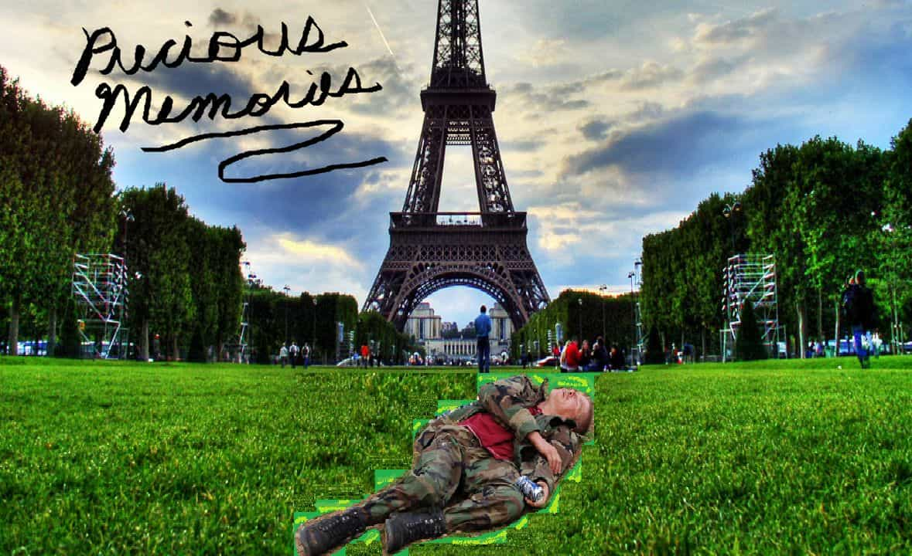

< < < Back
Get Laid By Becoming A Foreigner In Your Own Country – Return Of Kings
“Where are you from?”
The smile on my face faltered slightly. I look at the 8 sitting beside me, feeling the bitchiness rolling off her like stink off a very bangable garbage dump. I look slightly to her left, then smile and turn my ear in like I hadn’t heard her.
“Excuse me?” I ask.
“Where are you from?!” she asked back, louder, ruder, nearly snapping at me.
“Oh!” I chuckle, shaking my head. “Sorry! I am from Caen!”
She arched an eyebrow with a sour look on her face, ironically acting like I was the biggest asshole idiot in the conversation.
“Where?” she asked.
“Caen! Um, France!”
“No way,” she said with naked disbelief.
If this woman hadn’t been a very fit red-head her unpleasantness would have made me move on.

One day, whoever you are, one day…
Instead I plowed ahead with my pre-rehearsed method. I reached over to the drink menu on the bar table, took a pen out of my pocket and slid closer over to her to establish light physical contact while I drew a crude map of France on the blank side of the cardboard. Up on the Normandy coast I scribbled a rough square representing the Calvados Prefecture (State/Province), put a dot in it and labelled it Caen. Then, after a faked moment of hesitation, I went a bit across the map and put another dot labelled Paris.
Three hours later I was strolling out of her dorm whistling Don’t You Forget About Me.
We were both from the same country. At that point in my life I hadn’t spent two seconds in France. Yet the fact that I had convinced her I was Jean-Pierre Monet of Caen, France instead of Billy Chubbs of Turnip Town, Canaduh had gotten me a high quality notch that normally I would have had to pull my hardest A game to achieve.
Chicks dig foreign guys. With no differences, put Billy A beside Billy B and she’ll always choose the one who comes from further away. Why? There could be hundreds of reasons; the excitement of vicariously vacationing through his dink, sheer boredom with the regular men she rides in her town, the exotic factor. Whatever it is – chicks dig foreign guys.
And you don’t even have to be foreign to capitalize on it. In today’s global village it’s never been easier to create a foreign persona. You want to be from Rome? Five minutes on Google and you can know the names of the streets, what the view from your fake apartment looks like, what are the best restaurants in the city and even who the locals hate. You can go on Youtube and listen to how they talk, picking up their inflections, where they pause in conversation, their body language. It’s never been easier to play Foreign Game… although it still requires some dedication. Here’s how to get started.
Choose A Persona
Where do you want to be from? I grew up learning redneck French in Canadian schools, so my choice was already apparent. Anglo women adore France since they thrive on pop culture (and Anglo female Pop Culture has a girl boner for French anything), so France can be a good choice – but really, any European country can do. Except don’t choose one with a goofy or obscure name; you want to be foreign, not alien. Every time she has to ask “Where?” the V dries up a whole percentage. She’ll put out without much fuss for Michael from Stuttgart, Germany, but Mujo from Sarajevo, Bosnia probably isn’t going to be seeing too many wet Western panties beside his bed.
Trés exotique!
Learn The Language
This one is obviously… obvious. If you’re playing your Foreign Game in a Podunk town you might be able to get away with monkeying such gibberish as “Avec pour la vu c’est ce vu play eh bourdoir”, telling the awe-struck 5 crushing your lap that it means “You are as lovely, interesting and thin as a starry sky”. For the rest of the women in the world which haven’t been bred from a long line of cousins, it requires a (tiny) bit more effort in that you actually need to learn some phrases. And let’s face it – learning another language is awesome both for the mind and the soul. You don’t need to be fluent in the beginning, but once you’re out hunting your language should be distinctive enough to support your foreign persona.
Study The Geography
You don’t have to remember every street corner and restaurant, but open up a map and study the main routes, learn the major landmarks, the local tourist traps. As I mentioned above, women love vicariously vacationing through foreign guys. I’ve seen nipples pop when I talk about growing up playing street football (soccer to you uncouth barbarians) on the Rue de Bras and going to the Orne River and Normandy Beach to swim. I’m a little fortunate in that relatives of mine fought through Caen back in WW2, so I have their stories to repeat as well – I just, you know, leaving out the parts about the Nazi’s machine gunning me while I’m trying to surrender. Study your chosen city or town and become confident in the geography; you should be able to draw a very rough map of the region at a moment’s notice, and have a memorized story about each major spot.
Learn Some Customs
You don’t need to be fully aware of every custom of where you’re from but you should know one or two major ones – and always, always say that kissing as a greeting or goodbye is a custom. And by goodbye, I mean if you’re at a table with women, and a pretty one gets up even to use the washroom or get another drink, rush over and plant one on her. If she takes offense, well hey! It’s a custom where you’re from! Then the onus is on her to not be an Ugly American. It pretty much goes without saying to ignore that custom if she’s not bangable.
That’s about the basics of Foreign Game: persona, language, geography, customs. You should now be equipped to raise your quality level by a whole point. Just be aware that there are some things to take into account when employing your Foreign Game.
Foreign Game Is Not Applicable Everywhere
For optimal Foreign Game, you need to attend a low or mid level sized club or pub, somewhere that’s small enough that you will be semi unique, and not rowdy and loud enough that you can’t even let the girl’s know you’re from somewhere else. At bigger, more elite venues, there will be more foreigners by default and it will be harder to have a conversation or hold a girl’s attention long enough to build up your persona. Keep Foreign Game confined to places where you can grab and hold the girl’s attention. A huge chunk of Foreign Game is being a good story-teller.

Proof I’m French? Of course! Here’s me visiting the Eiffel Tower on France Day!
Foreign Game Cannot Be Used Often
“But hey Billy! I spent three goddamn months learning how to say Hey Wood Ya Blow Me in Afrikaans and studying every bush in Limpopo, South Africa. All that time spent and I can’t even use Foreign Game that often?” No, you can’t. Foreign Game’s power is in its rarity, its exotic nature. If you go out to the same round of clubs every weekend, pretending to be Sven from Sveeden, you’ll simply become another familiar – except now you’re one with a goofy accent. Save foreign game for visits to other cities or to your less frequented clubs.
Foreign Game Is Hard For Repeats
Some of us like to bang the same girl a few times. Maybe she’s smoking hot or has a nice pootenanner down there. Maybe she’s not too annoying and we can stomach her for slightly longer amounts of time then normal notches. It’s hard to keep up the charade with the same girl while acting in your foreign persona. If you think you can approach a girl with your normal game, then for god sakes stick with normal game. Foreign Game can be tiring enough 3-6 hours every two weeks; constantly keeping up with a girl while flipping between normal you and foreign you can get outright exhausting and is not worth the headache. Keep Foreign Game limited to one night stands in strange lands.
Foreign Game Is Solitary
You have to be a good, consistent actor when employing Foreign Game. It’s unlikely you will have good wingmen who can keep up without spoiling it. Solitary game can have its own difficulties but they’re all exacerbated when you’re pretending to be a completely different person. Prepare for a few notchless nights of looking like a complete jackass/creep – pretty much par for the course for most beginners attempting Alphadom.
You May Be Called Out
Anecdote time.
I went to visit a friend in another University town and wound up wheeling a fit red-head at the school’s pub (fit red-heads being my own personal 10’s). It was going along perfectly. I was in the middle of making her feel like a hero, explaining how we love Canadians where I’m from because they saved us from the Nazis, when suddenly she looked over my shoulder and waved someone forward. I turned around and saw a very plump 4 waddling over. My shield went up, thinking that this red-head was going to tell me she had a boyfriend but here was her ‘cute’ friend I could talk with.
“Hey Tara! This is John (it’s Jean-Pierre I wanted to shout at her for some reason), and guess what?! He’s from France too!”)
From France too… From France too… From France too… echoed in my head, and I felt my face contort like I suddenly had to drop a football sized one in the toilet.
“Oh!” Tara the European land whale said, and then fired off a string of quick, fluent French at me.
From good night to bad in 10 waddles.
I caught the word Marseilles and nothing else. Panic crept up in me, like I was a new inmate being surrounded in the showers by a bunch of smiling cons already at half chub. I thought quickly; Marseilles, Marseilles…that’s a city on the Mediterranean coast! It’s close to Italy, which meant she was probably telling me where she was from and asking where I was from.
“Marseilles?” I croaked back.
She nodded excitedly.
“Go – back – to…Alps,” I muttered lamely in fluent English, and I slinked away like a beta with my face thoroughly red. That night I wound up alone merely thinking about the red-head instead of finishing with her.
You may get called out. It will be embarrassing. Just remember, you’re alpha. You don’t need to explain yourself to anyone. Maintain your frame, salvage what is salvageable and if nothing is simply shift to a different group. After all – it’s all just a game. If you aren’t having fun, you aren’t playing it right.
So there y’all have it! Foreign Game; a powerful tool capable of upping your quality… if used appropriately – and sparingly. Go forth and rack up some notches.
Read More: 10 Signs A Bar Will Get You Laid


{kind=link}
{kind=link}
{kind=link}